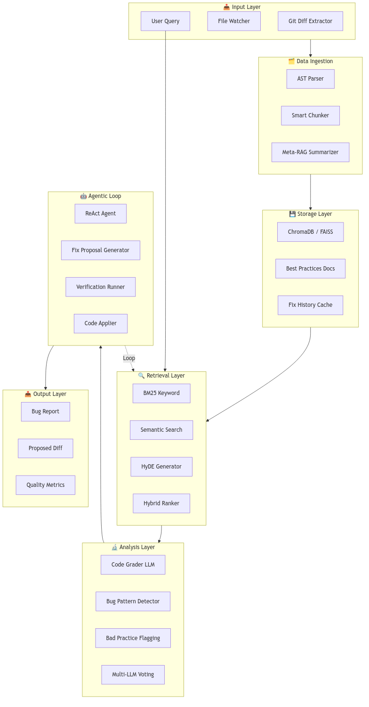
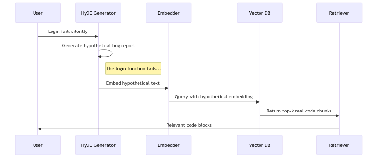
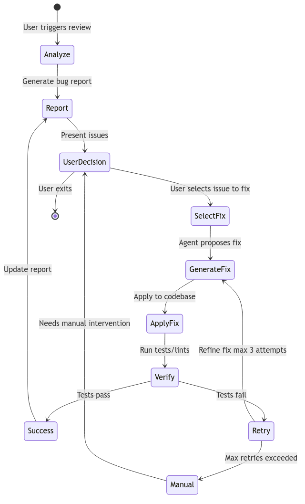

Applied LLM Final Project
January 2025
A professional-grade bug reporting and auto-fix system using RAG, multi-LLM evaluation, and agentic loops.
Goal: Build a Cursor-like code review tool that demonstrates:
This is an alternative implementation of the Applied LLM final project that still fulfills all core requirements.
The system is divided into 7 interconnected layers:

Key Components:
| Layer | Components | Purpose |
|---|---|---|
| Input | Git Diff Extractor, User Query | Collect code changes |
| Data Ingestion | AST Parser, Smart Chunker | Intelligent code parsing |
| Storage | ChromaDB, Best Practices Docs | Vector embeddings storage |
| Retrieval | BM25, Semantic Search, HyDE | Hybrid code retrieval |
| Analysis | Multi-LLM Voting, Bug Detector | Code grading |
| Agentic Loop | ReAct Agent, Fixer | Auto-fix with verification |
| Output | Bug Report, Proposed Diff | Final deliverables |
| Component | Technology | Purpose |
|---|---|---|
| Git Integration | gitpython |
Extract diffs from commits |
| AST Parser | Python ast |
Parse code into AST |
| Smart Chunker | Custom Python | Split by function/class |
| Meta-RAG Summarizer | LLM | 1-sentence summaries |
Git Diff Extraction:
class GitAnalyzer:
def get_changes(repo_path: str) -> dict:
return {
"staged": get_staged_diff(),
"unstaged": get_unstaged_diff(),
"last_commit": get_last_commit_diff(),
"files_changed": list_modified_files()
}We implement a hybrid retrieval strategy combining keyword and semantic search.

| Strategy | Use Case | Implementation |
|---|---|---|
| BM25 | Exact error messages | rank_bm25 library |
| Semantic | Logic bugs | Cosine similarity |
| HyDE | Ambiguous descriptions | Hypothetical doc embeddings |
| Hybrid | Default mode | Reciprocal Rank Fusion |
We use 3 LLM graders that evaluate code independently, then a judge combines assessments:
| Role | Model (OpenRouter Free) | Task |
|---|---|---|
| Grader 1 | mistralai/devstral-2512:free |
Security analysis |
| Grader 2 | kwaipilot/kat-coder-pro:free |
Logic bug detection |
| Grader 3 | nex-agi/deepseek-v3.1-nex-n1:free |
Performance analysis |
| Judge | allenai/olmo-3-32b-think:free |
Combine and rank |
Grading Output Schema:
{
"grader_id": "security_devstral",
"issues": [
{
"severity": "critical",
"type": "security",
"location": {"file": "auth.py", "line": 45},
"description": "JWT secret is hardcoded",
"suggested_fix": "Use environment variable"
}
],
"overall_score": 6.5
}The ReAct agent orchestrates the fix-verify-retry loop:

Agent Actions:
| Action | Description | Trigger |
|---|---|---|
SEARCH_CODE |
Query vector DB | Context insufficient |
READ_FILE |
Read full file | Chunk too small |
GENERATE_FIX |
Propose code change | Issue understood |
APPLY_FIX |
Write to file | User approves |
RUN_TESTS |
Execute test suite | After applying fix |
ROLLBACK |
Revert changes | Tests fail |
FinalProject/
├── codereview/ # Main package
│ ├── config.py # API keys, model config
│ ├── git_analyzer.py # Git diff extraction
│ ├── chunker.py # AST-based code splitting
│ ├── indexer.py # Vector DB operations
│ ├── retriever.py # Hybrid search
│ ├── grader.py # Multi-LLM grading
│ ├── agent.py # ReAct agent
│ └── fixer.py # Fix application
├── docs/ # Best practices
├── evaluation/ # Test dataset
├── main.py # CLI entry point
└── requirements.txt| Metric | Formula | Target |
|---|---|---|
| Detection Precision | TP / (TP + FP) | ≥ 0.80 |
| Detection Recall | TP / (TP + FN) | ≥ 0.75 |
| Fix Success Rate | Successful / Total | ≥ 0.60 |
| Multi-LLM Improvement | (Multi - Single) / Single | > 0.15 |
Evaluation Dataset (25 samples):
| Category | Count | Examples |
|---|---|---|
| Security bugs | 5 | SQL injection, hardcoded secrets |
| Logic errors | 5 | Off-by-one, null reference |
| Performance issues | 5 | N+1 queries, memory leaks |
| Style violations | 5 | PEP8, naming |
| Clean code | 5 | No bugs (false positive testing) |
| Layer | Technology |
|---|---|
| Backend | Python 3.11+ |
| Vector DB | ChromaDB |
| LLMs | OpenRouter Free Tier |
| CLI | Typer |
| Testing | Pytest |
| Visualization | Matplotlib + Seaborn |
# Index the codebase
python main.py index --path .
# Analyze unstaged changes
python main.py analyze --unstaged
# Fix a specific issue
python main.py fix 0| Phase | Days | Deliverables |
|---|---|---|
| Infrastructure | 1-3 | Git analyzer, AST chunker |
| RAG Pipeline | 4-7 | Indexer, retriever, HyDE |
| Analysis | 8-12 | Multi-LLM graders |
| Agentic Loop | 13-17 | ReAct agent, fixer |
| Evaluation | 18-21 | Dataset, metrics, plots |
| Polish | 22-23 | README, presentation |
Due Date: January 23, 2025 23:59
This project demonstrates a production-ready code review tool featuring:
The system is fully functional and ready for presentation.